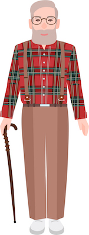

Person Descriptions
In this task, you will see illustrated images of different people.
You will read an adjective or short description, and you should click on every person that you think the description applies to.
At the end, you will then be asked a few brief questions about yourself. The task will take around 2.5 minutes.
You must be a native speaker of US English to take this HIT.
Please note: There will be multiple posted versions of this HIT throughout the day.
Please attempt only ONE HIT. Thank you!
LEGAL INFORMATION:
Please read the information below. By clicking Start, you agree that you have read the information and consent to participate in the survey.
We invite you to participate in a research study on language production and comprehension. Your experimenter will ask you to do a linguistic task such as reading sentences or words, naming pictures or describing scenes, making up sentences of your own, or participating in a simple language game.
There are no risks or benefits of any kind involved in this study. You will be paid for your participation at the posted rate. If you have read this form and have decided to participate in this experiment, please understand your participation is voluntary and you have the right to withdraw your consent or discontinue participation at any time without penalty or loss of benefits to which you are otherwise entitled. You have the right to refuse to do particular tasks. Your individual privacy will be maintained in all published and written data resulting from the study. You may print this form for your records.
CONTACT INFORMATION:
If you have any questions, concerns or complaints about this research study, its procedures, risks and benefits, you should contact the Protocol Director Meghan Sumner at (650)-725-9336.
If you are not satisfied with how this study is being conducted, or if you have any concerns, complaints, or general questions about the research or your rights as a participant, please contact the Stanford Institutional Review Board (IRB) to speak to someone independent of the research team at (650)-723-2480 or toll free at 1-866-680-2906. You can also write to the Stanford IRB, Stanford University, 3000 El Camino Real, Five Palo Alto Square, 4th Floor, Palo Alto, CA 94306 USA.
If you agree to participate, please proceed to the study tasks.
In this task, you will see an image of a person.
You should give three adjectives that first come to mind when you see the person.

For example, you might describe the person above as 'kind', 'frail', and 'hardworking'.
You can use whatever adjectives you like, but try not to focus just on physical attributes, or what the person is wearing.
You will then be asked a few additional questions about your impressions of the person.
| If you didn't select any of the people, explain why here: |
Please select, or explain why you have not selected any of them
Please answer the brief questions below.
First Language(s):
Gender:
Age:
Level of education:
(Optional) Do you have any comments about the HIT (any problems, etc.) ?
Please complete all non-optional questions!
Thanks for your time!